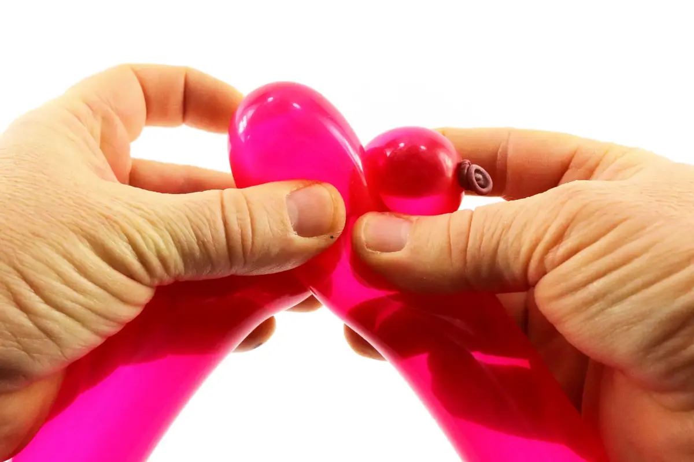
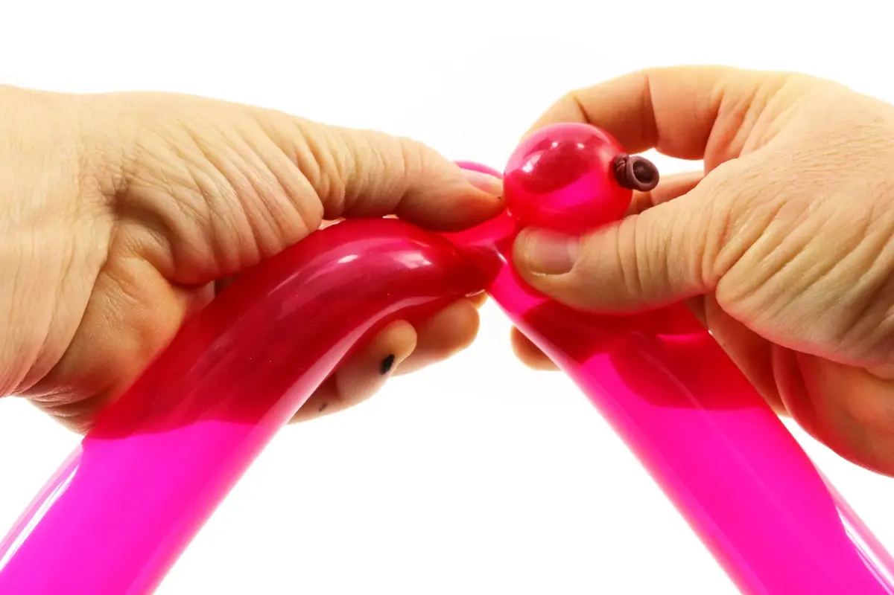
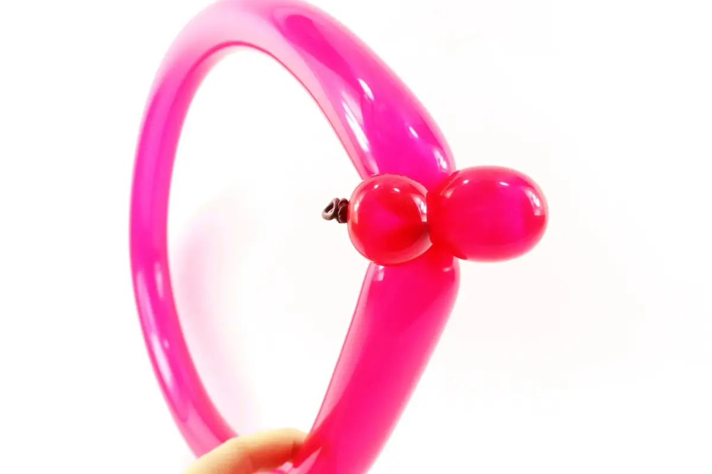
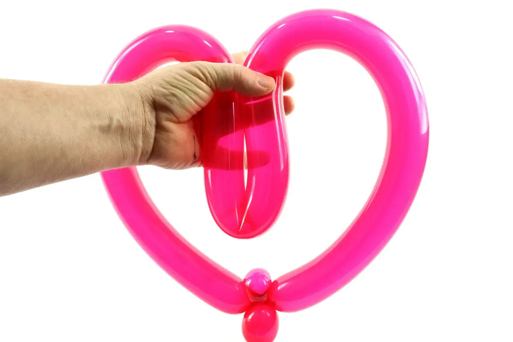

1- Gonfler un ballon entièrement, laisser s’échapper un peu d'air avant de faire le nœud, afin que le ballon soit bien souple et malléable, et s'assurer que la pression de l'air soit la même du début à la fin du ballon.2- Commencer par faire une bulle bien ronde.3- Rapprocher l'extrémité du ballon contre le pli situé sous la bulle.4- Incruster l'extrémité du ballon dans ce pli, de manière à former une nouvelle bulle à l'extrémité du ballon.5- Bloquer les deux bulles ensemble. La seconde bulle devra être un peu plus longue que la première.6- Transformer la première bulle (celle avec le nœud) en bulle oreille.7- Puis, caler la bulle oreille dans le creux formé par l'intersection de la boucle et de la dernière bulle, comme dans l'exemple ci-dessus.8- Repérer le milieu de la boucle, à l'opposé de la bulle et de la bulle oreille.9- Prendre la boucle à pleine main, en pliant le milieu de la boucle vers l'intérieur, comme dans l'exemple ci-dessus.10- Coller les deux cotés supérieurs de la boucle l'un contre l'autre et les tenir ensemble à l'aide de la main de maintien. Le centre de la boucle se retrouve plié vers le bas.11- Transformer ce pli en angle aigu à l'aide de la main de manipulation.12- Tout en maintenant le pli de l'angle aigu en place dans la main de maintien, utiliser la main de manipulation pour accentuer l'arrondi du coté supérieur droit (ou gauche, c'est selon...) du cœur.13- En gardant le pli de l'angle toujours en place, échanger de mains et refaire la même manipulation, cette fois-ci, une fois n'est pas coutume, c'est la main de maintien qui sera utilisée pour accentuer l'arrondi de l'autre coté supérieur du cœur, tandis que la main de manipulation tiendra en place, le pli de l'angle central du cœur.14- En dernier, relâcher tout doucement l'angle qui devrait tenir en place tout seul. Vous devriez ainsi obtenir ce beau cœur ! Et à bientôt ! Pour une autre leçon… avec Môssieur Ballon !